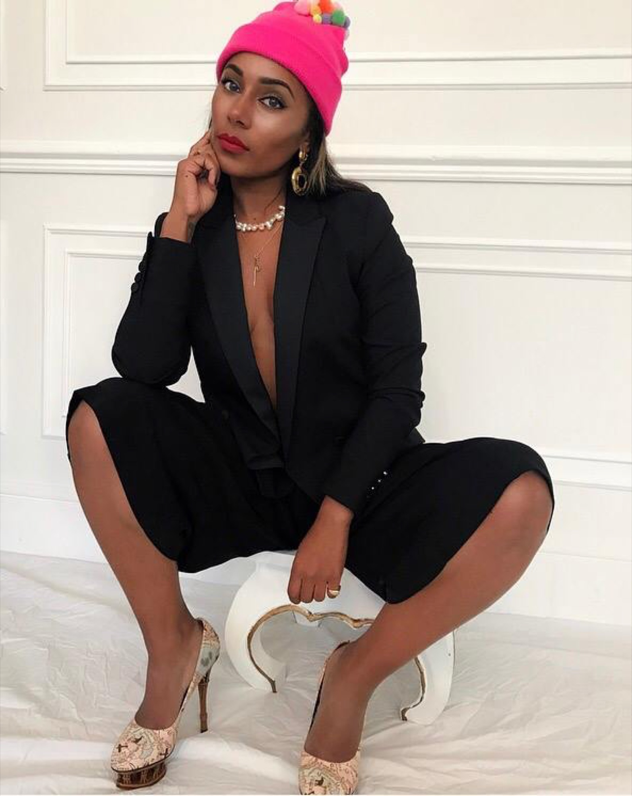

Antoinette Jordaine
Antoinette Jordaine is a Londoner, born, raised and based, a multi-disciplinary artist, storyteller and creative with over 20 years of experience across fashion, art, and the wider creative industries.
Her artwork began at the intersection of graphic design and fine art, before she chose to study fashion design, with her creativity evolving into wearable art and creations spanning homeware and interior design. Across each chapter, the throughline has remained the same: a belief that creativity is not just something to look at, but something to live by.
Antoinette's work is currently rooted in affirmational art inspired by the journey of life, exploring themes of womanhood, motherhood, identity, and conscious living. Her affirmations are created to uplift, offering a moment of strength, comfort and perspective during the trickier times we all inevitably go through. Her practice is a journey of healing and nourishment for the soul, where creativity becomes a daily practice of presence, reflection and renewal. She believes that creative expression, in whatever form it takes, is one of the most powerful tools we have for self-discovery and wellbeing, and that we are all artists in our own right.
Through her art, Antoinette invites others into that same process, to slow down, reconnect, and find their own creative voice as part of a more conscious way of living. None of this would be possible without the support of her growing team, and most of all, her family, who remain her greatest source of strength and grounding throughout every step of the journey.
Commissions and collaborations →